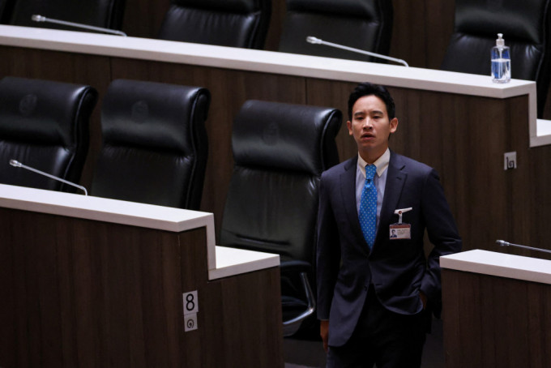

泰国前进党前党魁皮塔深受民众欢迎。（路透社）
泰国宪法法院今天（7日）下令解散反对派前进党（MFP），因为该党试图修改保护王室免受批评的《冒犯君主法》。法院亦颁令禁止前进党高层成员10年内参政。
泰国去年5月14日举行众议院选举，500个众议员席次中，2020年成立、主打改革理念的前进党（Move Forward）取得151席，成为国会最大党。
泰国有严厉的《冒犯君主法》（Lese Majeste），任何人诽谤、侮辱或威胁国王、王后、王储或摄政王，最高可判处15年有期徒刑。2020年下半年学生运动提出改革王室口号，学生运动后，泰国政府引用这条法律逮捕许多政治异议分子，前进党在竞选时提出修改刑法112条主张，受到年轻选民支持。
前进党及后遭人检举意图推翻君主立宪制，宪法法庭今天裁定解散前进党，并裁定禁止包括前党魁皮塔（Pita Limjaroenrat）在内等多位前进党干部10年内参与选举、成立新政党或是在新政党担任党职。
前进党党魁皮塔/美联社资料图片
泰国首相候选人、在野前进党党魁皮塔在曼谷的集会上向支持者表示感谢。
前进党领袖皮塔受年轻选民欢迎。 路透社
泰皇哇集拉隆功(中)；帕差拉吉帝雅帕公主(左)。REUTERS
泰皇哇集拉隆功（Vajiralongkorn）。 路透社
保守派律师提拉育（Theerayut Suwankesorn）去年向宪法法庭检举前进党和皮塔违反宪法49条「无人可以行使权利或自由推翻君主立宪制」的规定，请求宪法法庭要求前进党不再提出修改刑法112条诉求。
皮塔曾称无意推翻君主立宪制
皮塔曾表示，前进党无意推翻君主立宪制，修改刑法112条合宪，而且目的是要平息政治纷争。
宪法法庭今年1月31日宣判，前进党修改刑法112条提议是意图推翻君主立宪制，禁止皮塔和前进党再以任何方式表达有关修改刑法112条的意见。
宪法法庭当时只针对提拉育的请求，要求前进党不准再提修改刑法112条，没有裁定解散前进党。但政党一旦被判定违反宪法49条，选举委员会可以根据政党法第92条，收集证据要求宪法法庭解散该政党。